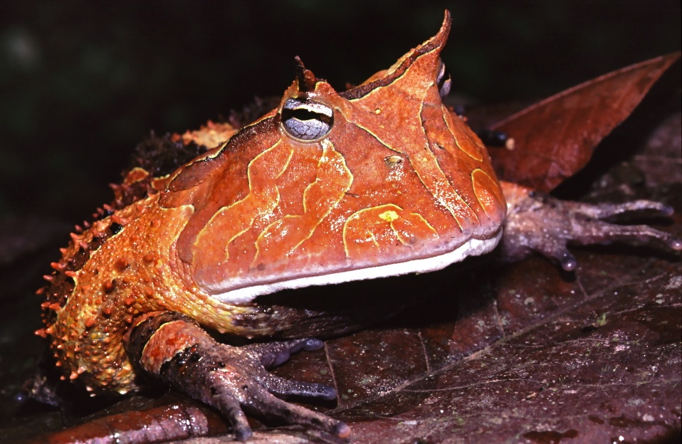

The first thing that stands out about the Surinam horned frog is its size. These rotund amphibians can grow to 8 inches in length and would cover a good-size tea saucer. They are found in freshwater marshes and pools throughout the Amazon Basin, from Colombia to Brazil.
Surinam horned frogs achieve their enormous girth by being generally indiscriminate about what they eat. Typical ambush predators, they squeeze their bodies into the forest substrate or leaf litter so only their heads protrude. When anything smaller than their own bodies happens by, they spring from the mud and swallow their prey whole, locking it in their jaws with their sharp teeth.